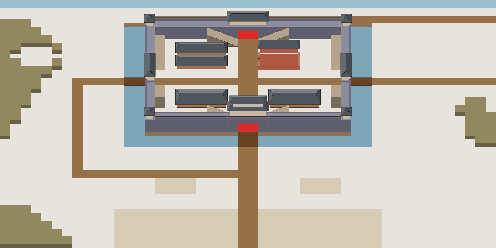
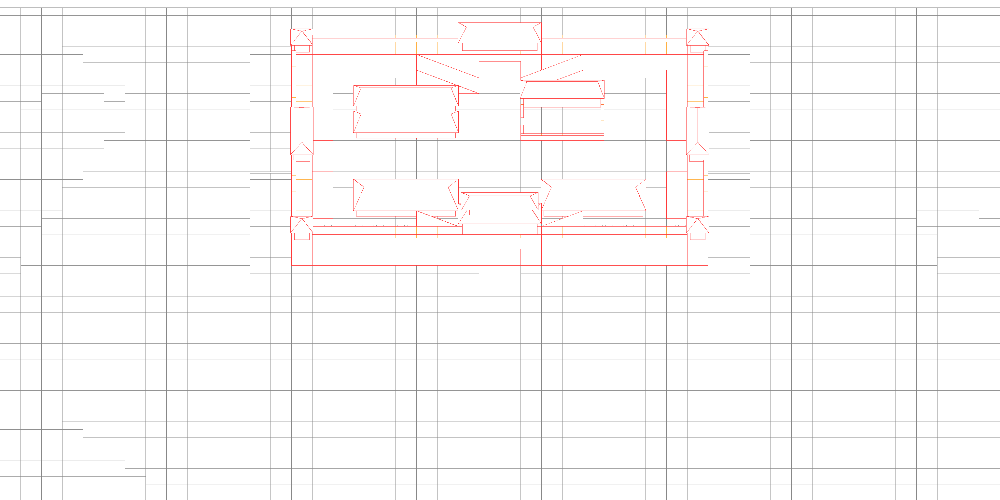
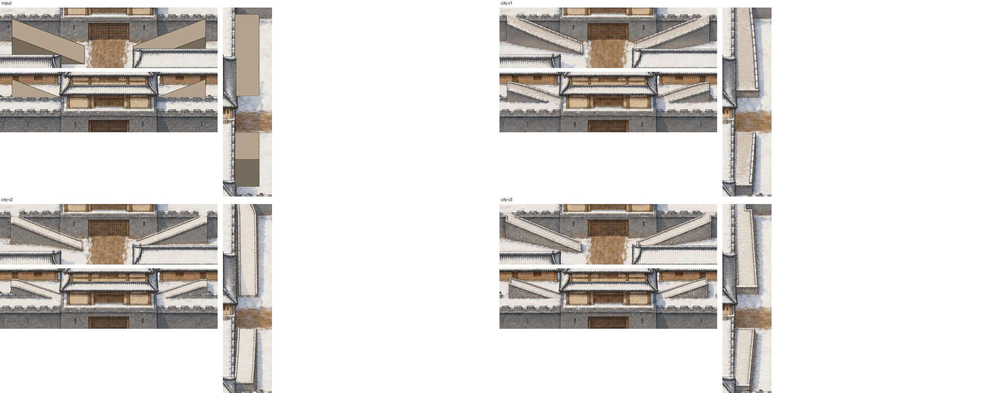
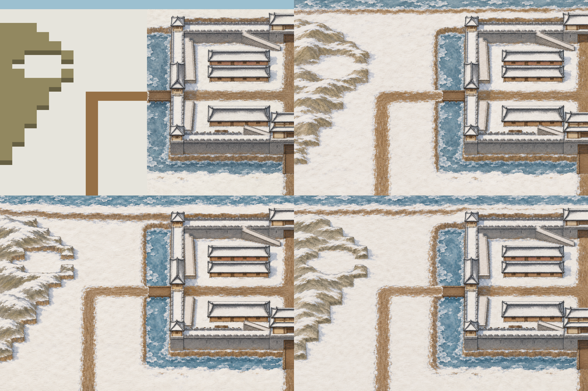
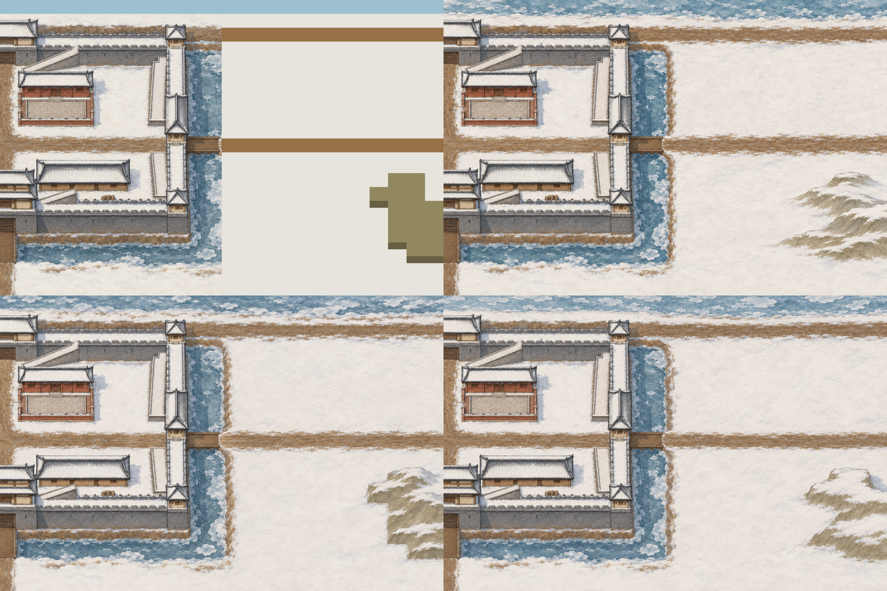
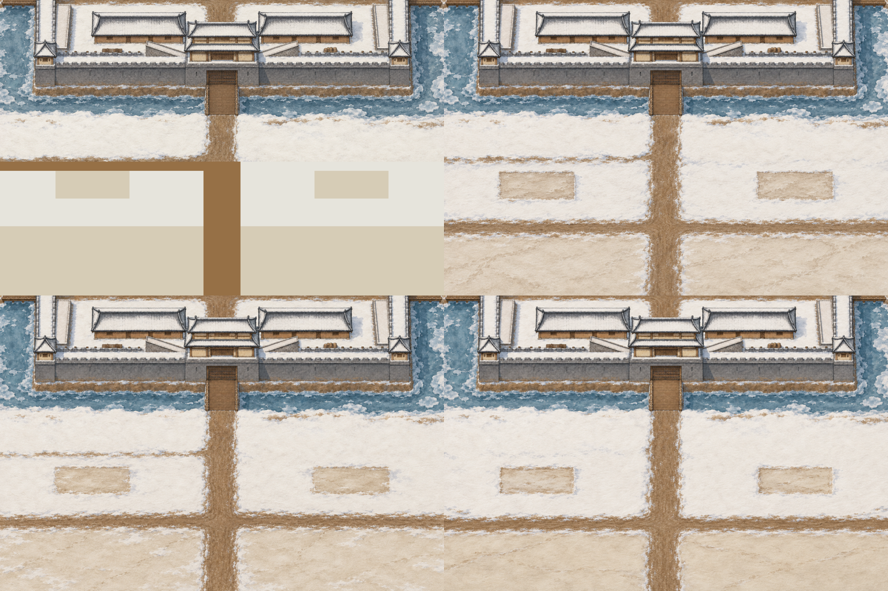
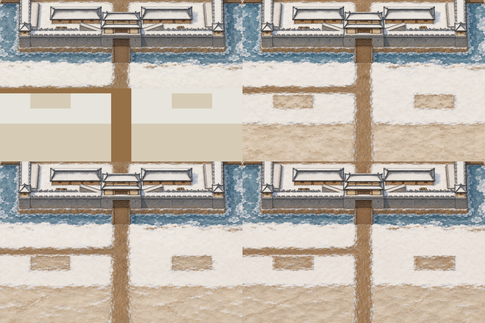
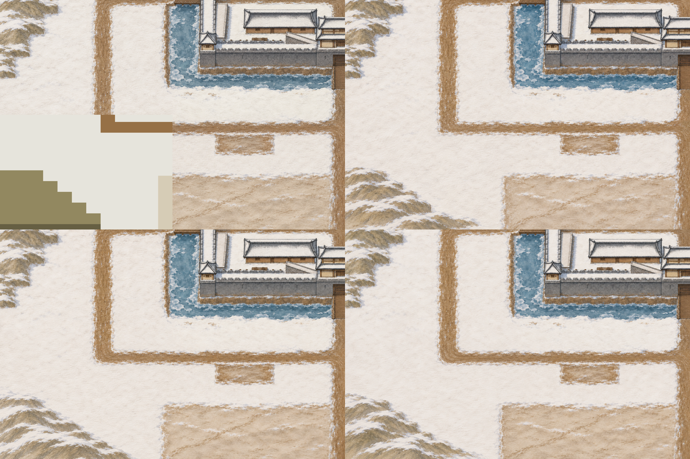
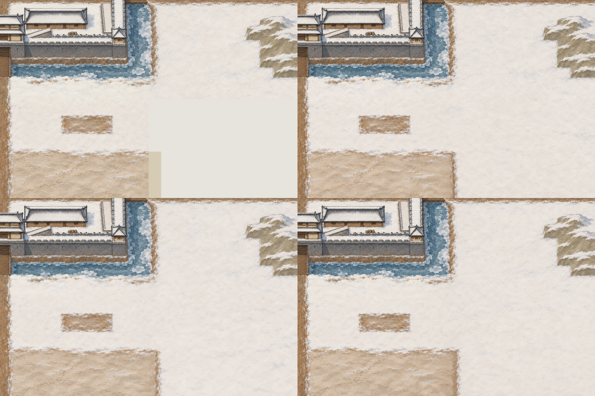

S2-01 全图整画（3072×1536，100% = 游戏 100% 缩放）
城池 v2-a + 马道 city-v3，扩画 西北 nw-v1、东北 ne-v2、南 s-v6、西南 sw-v3、东南 se-v3。可拖滚动条看局部；叠格子检查对位。



分步对比
左上是这一步的输入（灰盒部分要画），其余三格是候选。南块出了两轮：第一轮把十字路画到了营地边上。







透明版底色：